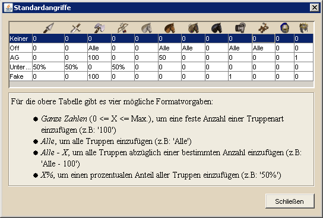

Standardangriffe festlegen |
||
|  | ||
| In der gezeigten Tabelle können Truppenzahlen festgelegt werden, die bei der Übertragung der Angriffe in den Browser verwendet werden sollen. So kann man, wie in der Tabelle zu sehen, z.B. festlegen, dass eine Off stets aus allen Einheiten vom Typ Axt, LKav, BBogen, Ramme und Katapult besteht, während für eine Unterstützung 50% der im Dorf stehenden Speere, Schwerter und Bogenschützen verwendet werden.
Unterhalb der Tabelle sind die verschiedenen, möglichen Werte mit Beispielen beschrieben. |
||
| Die Übertragung der Truppenanzahl in den Browser ist für Firefox und Opera möglich. Voraussetzung für die Übertragung der Truppenzahlen ist, dass das Userscript 'dswb.user.js' das sich im Verzeichnis 'Script' befindet, in den Browser eingebunden wird. Eine detailierte Beschreibung, wie Userscripte in Firefox oder Opera eingebunden werden können, findet ihr im Die Stämme Forum im Unterforum Scripte & Tools. | ||